HNSC · RNA-seq: contagens brutas (GDC)
STAR - Counts (GENCODE v36) · gerado em 21/10/2026 21:53
54,3 Mtamanho mediano
0,63dispersão mediana α
16.266genes
522amostras tumorais
44amostras normais
0,0%valores faltantes
Fonte: API do GDC (STAR - Counts)
Principais resultados
- Bibliotecas de 21,0 a 91,7 milhões de leituras (mediana 54,3). 43.855 de 60.660 features têm leitura em pelo menos 10% das amostras.
- A variância cresce bem acima da média: a dispersão mediana da binomial negativa é α=0.63 (para features com média > 10). Isso descarta um modelo Poisson e indica binomial negativa (ou Poisson-lognormal) na verossimilhança.
- A fração de zeros é compatível com a binomial negativa (diferença mediana -2,1%); inflação de zeros não parece necessária.
- Em média 11,3% das leituras de cada amostra vão para as 20 features mais abundantes (KRT5, KRT14, KRT6A).
- Genes codificadores de proteína recebem 97,9% das leituras (mediana).
- 16.266 genes medidos em 566 amostras (522 tumorais e 44 normais); 0,0% dos valores estão faltando.
- Os dois primeiros componentes principais explicam 14,1% e 11,2% da variância das features mais variáveis.
- Correlação mediana entre amostras: 0,60.
- Amostras com correlação muito abaixo das demais (possíveis outliers técnicos): TCGA-CV-6939-11, TCGA-CV-7097-11, TCGA-CV-7091-11, TCGA-HD-A634-01.
- Tumor x normal: 11783 genes diferentes com FDR < 5% (8861 maiores no tumor, 2922 maiores no normal; 43 pacientes têm o par tumor-normal).
- Mais aumentados no tumor: ENSG00000261327.5, ENSG00000238125.1, ENSG00000170965.10, ENSG00000086717.18, ENSG00000119547.6, ENSG00000005073.6, ENSG00000257636.6, ENSG00000170689.10.
- Mais reduzidos no tumor: ENSG00000118596.12, ENSG00000106078.19, ENSG00000134716.11, ENSG00000198478.8, ENSG00000108924.14, ENSG00000043039.7, ENSG00000074964.17, ENSG00000198643.7.
- Associações clínicas com p < 0,05 nos componentes principais: PC3 com estádio (p=0.00027); PC1 com sexo (p=0.002); PC3 com sexo (p=4.5e-05); PC2 com sobrevida (p=0.0041); PC3 com sobrevida (p=0.00049).
Biblioteca
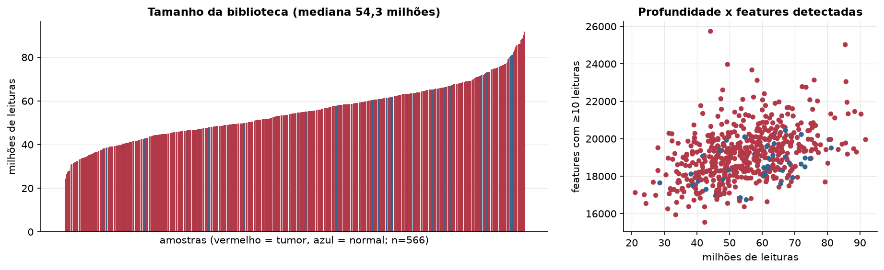
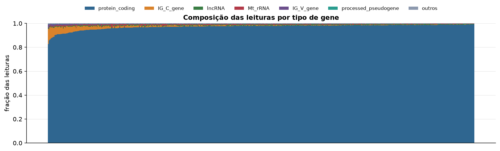
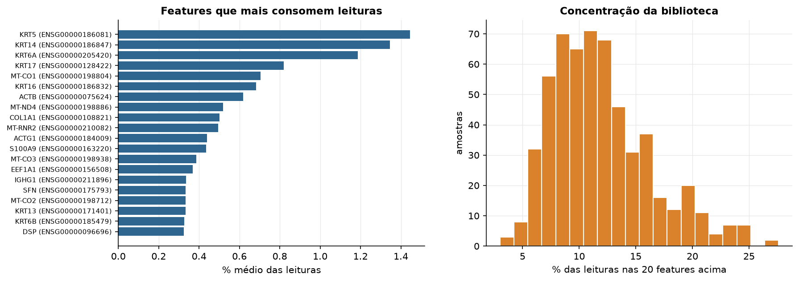
Sobredispersão e zeros
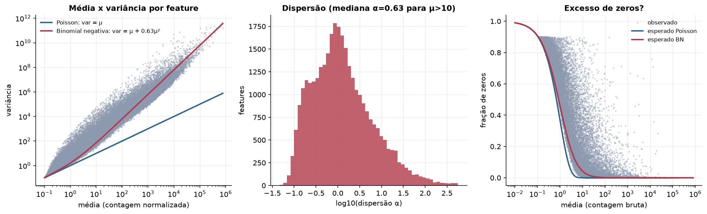
Exploração em log2(CPM+1)
Features com CPM ≥ 1 em pelo menos 20% das amostras (16.266 features).
Distribuição dos valores
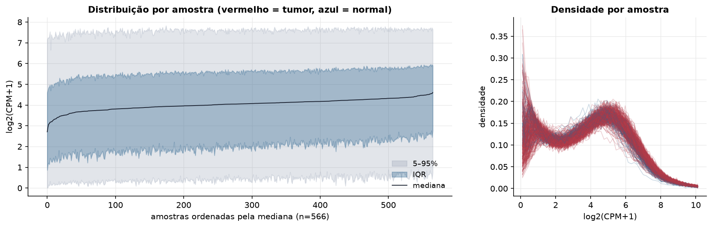
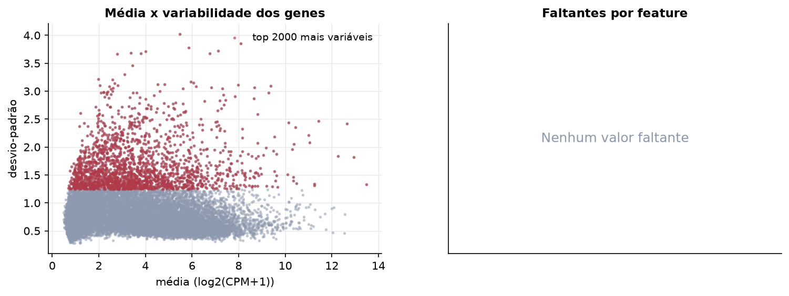
Estrutura das amostras
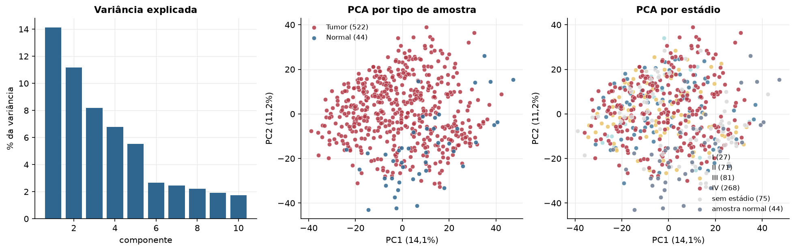
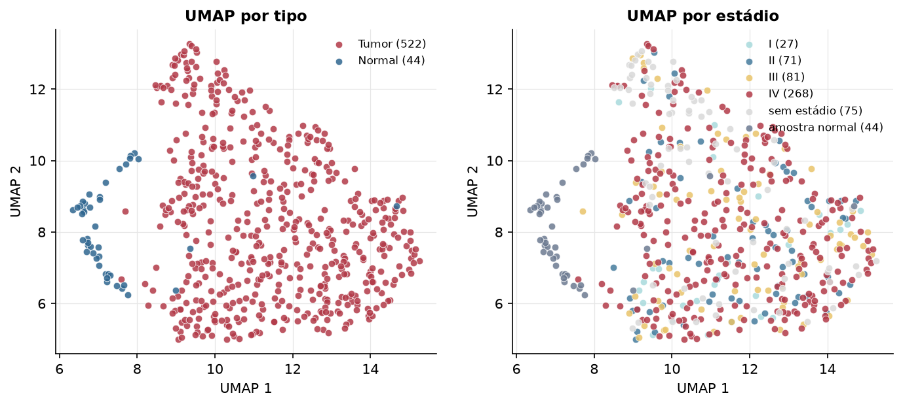
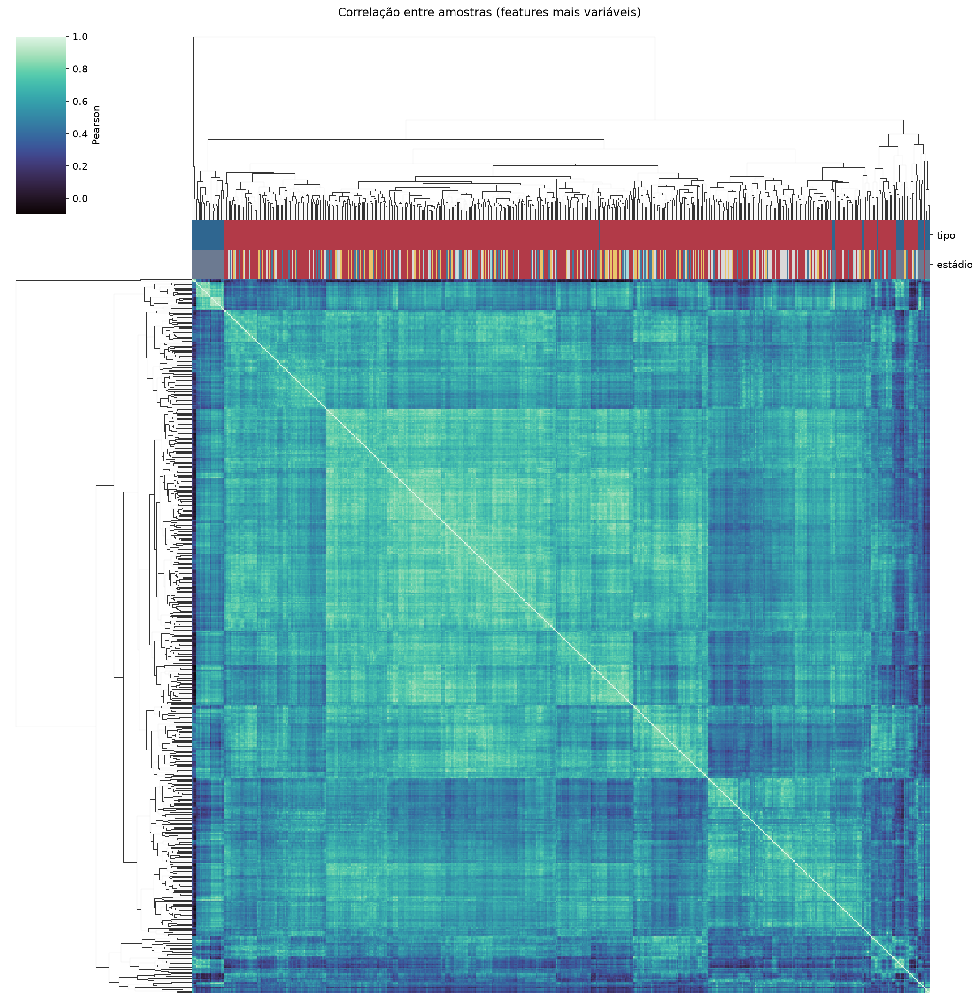
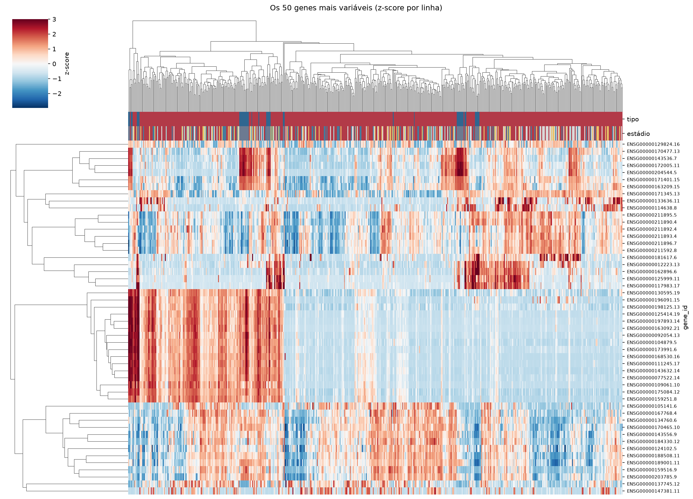
Tumor x normal
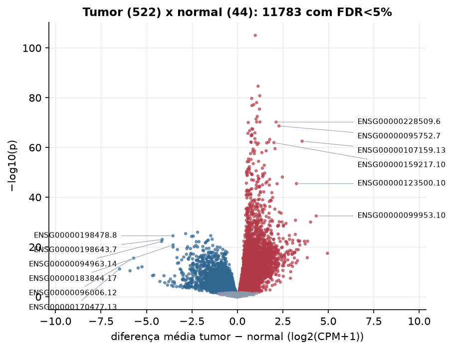
Features mais diferentes entre tumor e normal
| gene_id | diferenca_tumor_menos_normal | t | p | fdr |
|---|---|---|---|---|
| ENSG00000261327.5 | 0.985 | 27.469 | 8.36e-106 | 1.36e-101 |
| ENSG00000238125.1 | 1.141 | 24.085 | 2.3e-85 | 1.87e-81 |
| ENSG00000170965.10 | 1.232 | 23.623 | 1.61e-81 | 8.71e-78 |
| ENSG00000086717.18 | 0.789 | 23.523 | 1.8e-80 | 7.31e-77 |
| ENSG00000119547.6 | 1.061 | 23.129 | 9.25e-79 | 3.01e-75 |
| ENSG00000005073.6 | 0.901 | 22.369 | 5.95e-78 | 1.61e-74 |
| ENSG00000257636.6 | 0.801 | 22.184 | 1.35e-77 | 3.13e-74 |
| ENSG00000170689.10 | 1.217 | 21.691 | 3.68e-76 | 7.49e-73 |
| ENSG00000184502.4 | 1.098 | 21.091 | 3.37e-73 | 6.09e-70 |
| ENSG00000228203.7 | 1.028 | 24.454 | 3.69e-72 | 6e-69 |
| ENSG00000213468.7 | 1.064 | 22.605 | 5.54e-71 | 7.74e-68 |
| ENSG00000089116.4 | 1.242 | 23.283 | 5.71e-71 | 7.74e-68 |
| ENSG00000228509.6 | 2.133 | 22.604 | 6.21e-71 | 7.77e-68 |
| ENSG00000253616.5 | 0.601 | 21.621 | 8.96e-71 | 1.04e-67 |
| ENSG00000095752.7 | 2.292 | 29.193 | 2.27e-69 | 2.46e-66 |
| ENSG00000267013.6 | 0.806 | 20.122 | 2.79e-68 | 2.84e-65 |
| ENSG00000230838.1 | 0.841 | 20.152 | 4.56e-68 | 4.36e-65 |
| ENSG00000214429.3 | 0.679 | 20.003 | 1.77e-67 | 1.6e-64 |
| ENSG00000029559.7 | 0.967 | 20.431 | 1.27e-66 | 1.09e-63 |
| ENSG00000230570.1 | 0.582 | 21.754 | 2.11e-66 | 1.71e-63 |
| ENSG00000234041.1 | 0.794 | 22.908 | 5.83e-66 | 4.52e-63 |
| ENSG00000223553.6 | 0.8 | 19.766 | 1.41e-65 | 1.04e-62 |
| ENSG00000173157.17 | 0.76 | 19.572 | 1.91e-65 | 1.35e-62 |
| ENSG00000241749.4 | 0.965 | 19.87 | 2.84e-64 | 1.92e-61 |
| ENSG00000286042.1 | 1.782 | 20.597 | 5.84e-64 | 3.8e-61 |
| ENSG00000107159.13 | 3.563 | 28.862 | 2.91e-63 | 1.82e-60 |
| ENSG00000178150.10 | 1.719 | 24.927 | 6.57e-63 | 3.85e-60 |
| ENSG00000250697.2 | 0.746 | 19.113 | 6.63e-63 | 3.85e-60 |
| ENSG00000233532.6 | 1 | 19.927 | 7.66e-63 | 4.3e-60 |
| ENSG00000106031.9 | 0.763 | 19.046 | 8.78e-63 | 4.76e-60 |
Associação com variáveis clínicas
p-valores da associação dos três primeiros componentes principais (só tumores) com estádio (Kruskal-Wallis), sexo (Mann-Whitney), idade (Spearman) e sobrevida global (Cox univariado).
| estádio (Kruskal) | sexo (Mann-Whitney) | idade (Spearman) | sobrevida OS (Cox) | |
|---|---|---|---|---|
| PC1 (14,6%) | 0.545 | 0.002 | 0.763 | 0.106 |
| PC2 (11,4%) | 0.305 | 0.113 | 0.986 | 0.004 |
| PC3 (7,3%) | 0.000267 | 4.45e-05 | 0.773 | 0.000493 |